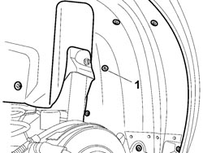
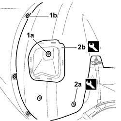

7055B45 RIGHT REAR WHEEL ARCH LINER - R.R
- Path
- Procedures > 70 FITTINGS > 7055 MOULDINGS AND PROTECTION > 7055B EXTERIOR PROTECTIONS > 7055B45 RIGHT REAR WHEEL ARCH LINER - R.R
- Kind
- repair procedure (removal / refitting; the operation number is the code)
- Applies to
- all engines; all production periods
- Interactive page
- https://sloeber94.github.io/elrnDB-fCrm/en/#/194001179
Applies to: all engines; all production periods
 Removing
Removing
 Refitting
RefittingOp. 4450B08 RIGHT REAR WHEEL - R.R
1. Undo the nuts fixing the wheel arch liner to the bodyshell.

Applies to: all engines; all production periods
1. Undo the nut (1a) fixing the retainer and the bolts (1b) securing the wheel arch liner to the inner edge of the wing on the bumper.
2. Using the special tool, release the three retaining buttons (2a) and the wheel arch retainer (2b).
Tool | Description | Function | Validity |
|---|---|---|---|
1878077000 | Knife | Retainer removal |
- Remove the rear wheel arch liner from the vehicle.

Applies to: all engines; all production periods
Refitting
Removing- Check that the wheel arch liner is not damaged.
- Place the wheel arch in position, fit the three buttons and the retainer.
- Tighten the twelve nuts fixing it to the bodyshell.
- Tighten the three bolts securing the wheel arch to the inner edge of the wing on the bumper.
Topics linked from this page (1)
Topics that link to this page (10)
- 1040A10 FUEL TANK - R + R AND DECANT FUEL
- 1040A14 FUEL TANK - R + R FOR REPLACEMENT
- 1040A30 FUEL FILLER PIPE ASSEMBLY- R + R
- 1040B36 REAR FUEL DELIVERY LINE - R.R
- 1080E10 TANK FUEL VAPOUR SEPARATOR - R + R
- 1080E20 ACTIVE CARBON FILTER FOR FUEL VAPOURS - R + R
- 3310B62 REAR BRAKE PADS - REPLACE
- 3340B69 RIGID PIPE FROM LEFT RER BRAKE CONNECTOR - R.R.
- 3340B71 INTERMEDIATE RIGID PIPING FITTING, LH REAR BRAKE - R R
- 7025C10 FUEL FILLER ACCESS FLAP - R+R